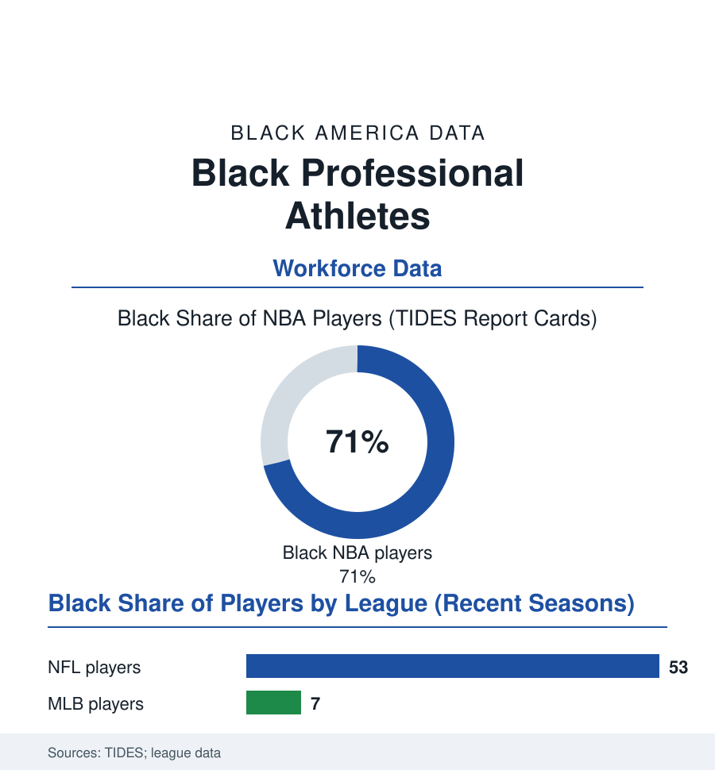

Black Employment
The Players: Black Athletes as a Workforce
Professional sports are a workplace with the strangest demographics in the employment file: majority-Black labor, a three-year median career, and the most scrutinized wages in America. The players file.

There is exactly one American workplace where Black labor is the majority, the wages are published in the newspaper, and the career lasts about as long as a presidential term: professional sports. The Institute for Diversity and Ethics in Sport's annual report cards count the rosters — the NBA above seventy percent Black, the NFL above half, the WNBA's majority, and baseball's long decline to the single digits — and the labor data beneath the spectacle describe a workforce unlike any other in this atlas. This article reads the players file.
The Strangest Labor Market in the File
Start with the pyramid's absurd narrowness, because the aspirational economy built on it fills several other files: the NCAA's own probability tables place the chance of a high-school player reaching the pros in the hundredths of a percent, while the youth-sports economy's spending — the travel teams, the trainers, the recruiting services of the education file — prices the ticket as if the odds were a rounding error kinder than they are. For the few thousand who arrive, the employment terms invert the usual file: the wages at the median are princely by any civilian standard and the duration is not (the NFL's average career in the three-to-four-year range in the union's data, the pension vesting on the same knife's edge), the income compressed into the years when the earner is least equipped by age to manage it — the financial file's cautionary literature in cleats, substantially a literature about young Black men, their entourages of obligation (the hometown ledger every profile records), and the bankruptcy studies whose headline rates the careful researchers dispute but whose direction nobody does. The labor structure above the individual is the file's real subject: the players' associations as some of the strongest unions in American life — their share-of-revenue bargains, their strikes and lockouts in the sports pages' business sections — and their racial composition making the American labor movement's most visible negotiators, in the current era, substantially Black-led, a fact the union file registers quietly. The owners' side of the table holds the mirror image the TIDES cards grade annually: the front offices' and ownership's demographics a generation behind the rosters' — the league that is seventy percent Black in labor counting its Black principal owners on one hand, its head coaches and general managers climbing the pipeline the coaches file measures.
The Body, the Bargain, and the After
The occupational hazards are the health file's in uniform: the orthopedic certainty (the knee and shoulder files' professional edition), the brain-injury literature whose settlement and research programs turned the NFL's workforce data into a neurology cohort — the players' own surveys and the union's health studies carrying numbers the league spent years contesting, the episode standing as the era's largest case of a workforce's exposure data fought over by its employer, with the workforce majority-Black and the ownership not — a configuration the industrial-history shelf recognizes on sight. The newer bargains answer in the current contracts' fine print: the guaranteed-money creep in the NBA's standard, the college game's transformation — the NIL era remaking the pipeline's economics in the education data (the seventeen-year-old with an agent and a collective deal, the HBCU programs bidding in the new market's small print), the transfer portal as free agency's farm system. And the after: the post-career data that decide what the pyramid was worth — the degree-completion programs the unions run, the broadcasting and coaching pipelines, the franchise-ownership and car-dealership files where the retired player's capital lands (the business section's recurring alumni), the median outcome the earnings studies keep honest: for the median signee, a few years of high wages, a body of receipts, and a second career to build at twenty-seven. The file's judgment is the data's: as spectacle, the players are the most celebrated Black workforce in America; as labor, they are a case study in how much of an industry's value the workers can capture when they are irreplaceable, organized, and brief — and how narrow the door remains through which the celebration is reached.
Reading the Players Data
The rosters are the employment file's only page the whole country reads for pleasure. Beneath the pleasure sits the ledger: the shortest careers, the strongest unions, the steepest pyramid in the book. The leagues publish the report cards every year — the one workforce in America whose racial data the fans themselves can recite.
More in Black Employment
The Black Unemployment Rate: The Two-to-One Pattern
Black unemployment runs at roughly twice the White rate — 5.5 percent against 3.3 percent in annual averages — a ratio stable across five decades of federal data. How it is measured and why it persists.
Black Median Weekly Earnings: The 80-Cent Ratio
Black full-time workers earn a median of about $900 a week — roughly 80 cents for every dollar White workers earn. The BLS earnings data by group, gender, and occupation.
Black Labor Force Participation: Working at National Rates
Black labor force participation runs at roughly the national rate — and Black women participate at higher rates than White women. The BLS participation data.
Source: League demographic reports (TIDES); players association data; Bureau of Labor Statistics athlete data; academic sports-economics research.